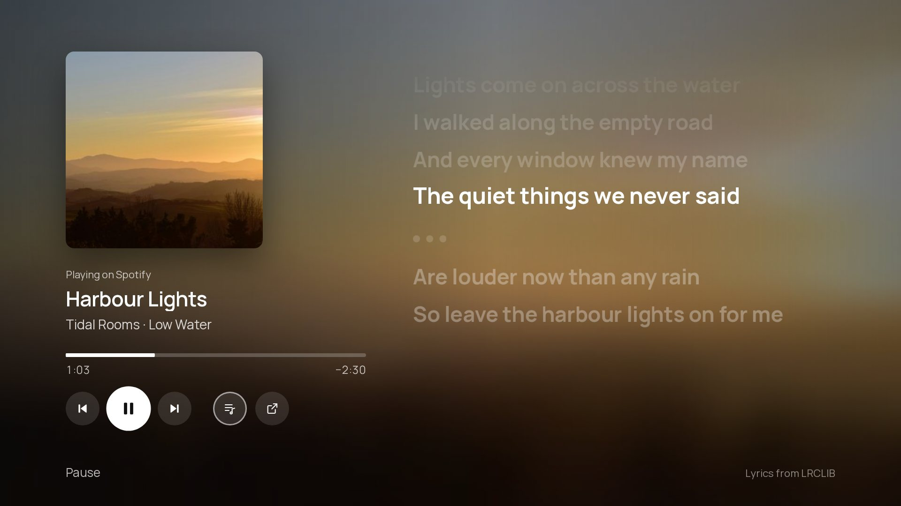
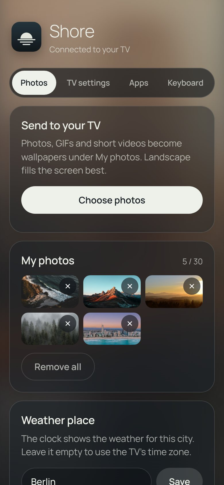
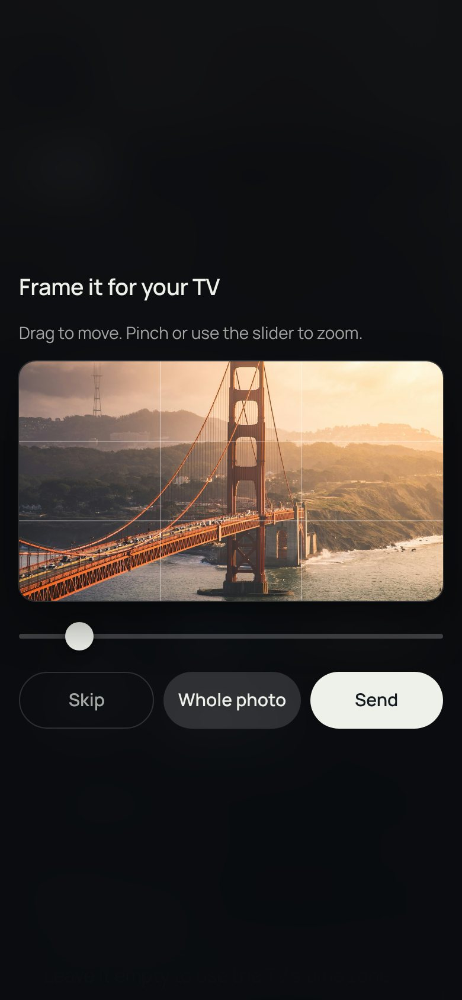

ShoreOn the TV

- Tested onTCL 55C6KS (Android TV 12), TCL 65C7K, CHiQ L32QM8G (Android 14), Hisense A6N (Android TV 12)
- LanguagesEnglish, German, French, Spanish, Dutch, Polish, Ukrainian, Italian, Turkish
- InstallOnce with adb, then it updates itself
- PriceFree, MIT licence
LookApps and inputs
Shore finds your installed apps and puts up to nine on Home, in the order you choose. The Dock and List layouts draw every logo the same way: Shore's own drawings in colour or in one colour, or the icons from a pack you've installed, such as one made for Projectivy Launcher. Hold OK on any app to give it a different icon.
Apps you opened lately but haven't put on Home follow your own ones in the dock, up to three of them.
Shelf uses each app's own banner instead. The focused app fills the screen with what's on there, and Down opens a row of picks. ARD, ZDF and ARTE work as they are. YouTube, Twitch and the apps covered by TMDB need API keys in a build of your own.


A console or set-top box gets a tile when you switch it on and loses it when you switch it off. The name comes over HDMI-CEC, so you see "PlayStation 5" rather than "HDMI 2". Inputs can go first in the dock or in a row of their own, and you can hide the ones you never use. If a device turns on while Home is showing, Shore asks whether to switch to it.

Pressing Home opens Shore and holding it opens Google TV's own Home. The app shortcut keys and the TV button on the remote can be given new jobs: an app, an input or the screensaver.
- Parental lockA four-digit PIN before the apps you choose open, and before Settings if you like. Type it with the number keys or pick each digit with the arrows.
- Sleep timer30 minutes to two hours, then the TV switches off, even in the middle of another app.
Clock and infoUnder the clock
Optional lines sit under the time. Each has its own settings page.

- WeatherTemperature and sky from Open-Meteo, which needs no key or account. The place follows the TV's time zone unless you type a city on your phone. Weather effects draw rain, snow, fog or a storm over the photo while it's happening; clear skies leave it alone.
- MusicWith notification access, Shore shows what another app is playing, such as Spotify in the background. If an app shares only a small cover, Shore looks for an artist photo on TheAudioDB or a bigger cover on iTunes. You can turn that lookup off.
- NewsOne headline every 20 seconds from Google News for your language and country, an outlet like BBC News or tagesschau, or an RSS feed you paste on your phone. Shore fetches it at most twice an hour and keeps only the titles.
- CalendarPaste your calendar's iCal address on your phone and the next event shows up: "Tomorrow 9:30 · Dentist". Google Calendar, iCloud and Outlook all have one.
Clock and infoMusic view
While something plays, the ♪ button on Home opens the song full screen: the cover, a progress bar you can skip through, the controls, and lyrics that keep time with the music. Lines slide up as the song moves on and the words light up as they're sung, like Apple Music on a phone.

- LyricsShore only shows lyrics whose title, artist and length match the version that's playing, so a radio edit or a cover gets none rather than the wrong words. Only the artist, title, album and length leave the TV.
- Beat pulseTurn it on and the beat pushes the cover and the background out a little. Shore listens for where each song keeps it, whether that's an 808, a kick, claps or hi-hats. It listens to the TV's own sound, not a microphone, though Android still asks to allow recording audio.
- Up nextThe next three songs, when the music app shares its queue. With a song playing, the screensaver stays away.
- TranslationOptional: a translation into your TV's language under every line. The lyrics go to Google Translate for that, so it's off until you turn it on.
- Continue watchingIn Dock, a row under your apps with what you were watching in apps that share it, such as Twitch and Apple TV. Down to pick, OK to carry on.
LookWallpapers
Fifteen photographs come with the app. Online, Shore can fetch from NASA, Bing, Wikimedia Commons and Picsum without keys, and from Unsplash, Pexels and Klipy if you build it with your own. There are three animated loops, and your phone can send photos, GIFs and short clips.
The picture changes each time Home opens or every 5, 15 or 60 minutes. Favourites always stay in rotation; hidden photos never come back. The frosted panels are rendered once when a photo arrives, so the TV never blurs anything while you use it.


When you're awayScreensaver and night
After 5, 10 or 15 minutes without a button press, Shore fades to its own screensaver. Your wallpapers drift past one at a time or as a mosaic of two or three, under a large clock with the date and the weather. The clock changes corner every few minutes so nothing stays on the same pixels, and after four hours Shore hands over to the TV's sleep timer.

Night mode dims everything from 21:00 to 07:00, 22:00 to 06:00 or 23:00 to 07:00, or all the time. It can also keep the rotation to darker photos while it's on.
ShoreSettings
Settings are two columns of short pages. Up and Down move within a column and Left and Right switch columns. No page scrolls, and most show a preview of what you're changing.

- LookWallpaper, Home screen, Apps on Home, Style, Text and icons
- When you're awayNight, Screensaver
- Clock and infoClock, Weather, Music, News
- ShoreInputs, Phone, Google TV
ShorePhone companion
Turn on Settings › Phone and scan the code. The TV serves a small web app to your phone over your home Wi-Fi. Nothing passes through the internet, and the TV only answers phones that scanned its code.


- Send photos, GIFs and short videos. Each photo opens in a 16:9 frame first so you can crop it for the TV.
- Change any TV setting, and add, remove or reorder the apps on Home.
- Type the weather city, paste a news feed or your calendar's address instead of spelling it out with the remote.
- Save every setting to a backup file and restore it later, or on another TV.
Get ShoreInstall
You need a computer on the same network with Android's adb, once. Shore installs next to Google TV and doesn't replace or remove anything.
- Turn on developer options. On the TV, open Settings › System › About and press OK on Android TV OS build seven times.
- Allow debugging in Settings › System › Developer options.
- Connect with
adb connect <tv-ip>:5555and accept the prompt on the TV. - Install the APK from the latest release with
adb install -r Shore.apk. - Point Home at Shore by turning on Settings › System › Accessibility › Shore Home button. On TCL sets, also allow Shore to auto start in TV Guard.
From then on, Settings › Google TV › Shore updates fetches new releases from GitHub, and Android asks you before installing each one. The README covers Android 14 wireless debugging and an optional, reversible list of TCL extras to switch off.
ShoreSupport it
Shore is free, with no ads and no tracking, and it's made in spare time. If it made your TV nicer, a coffee or a monthly sponsorship keeps new features and fixes coming.
Questions, ideas or a TV to report? The Discord is the fastest way to reach me.
ShoreQuestions
How do I get the normal Google TV home screen back?
Hold Home for a second. To stop Home opening Shore altogether, turn off Shore Home button in Accessibility, or uninstall Shore.
What does Shore send over the internet?
Only what the features you turned on need: weather from Open-Meteo, headlines from your news source, photos from the wallpaper sources you ticked, Top Shelf picks, and the artist and title for album art if you allow it. There are no accounts, analytics or ads.
Will it work on my TV?
It's built on a TCL 55C6KS with Google TV on Android 12, and people have it running on a TCL 65C7K, a CHiQ L32QM8G with Android 14 and a Hisense A6N with 2 GB of memory. It's an ordinary Android TV app, so other Google TV and Android TV devices will probably work too.
Do updates keep my settings?
Yes. Your settings and photos stay. A copy you built yourself is signed with a different key, so it tells you about new versions instead of installing them.
Who made it?
Shore is a fork of CleanFrame by Nathan Clark, which was written for Samsung's The Frame. Both are MIT licensed. The Home Assistant add-on was made by mozthewah. Fonts, photos and app logos keep their own licences, listed in THIRD_PARTY_NOTICES.md.